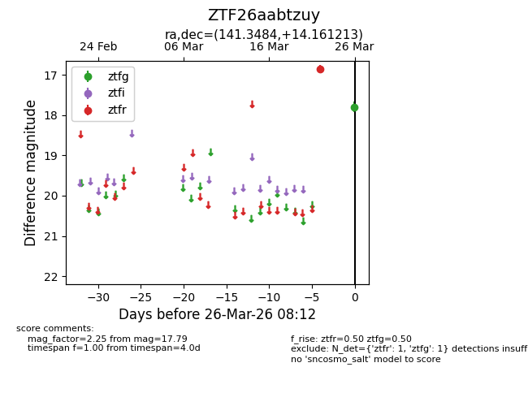
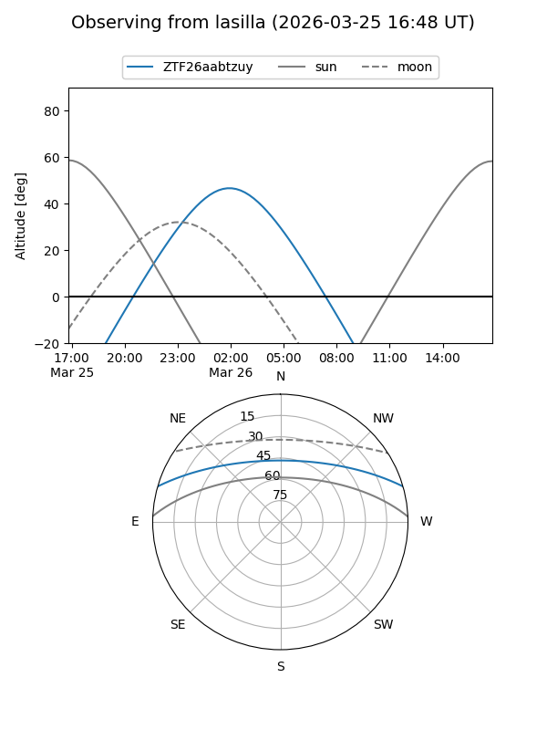
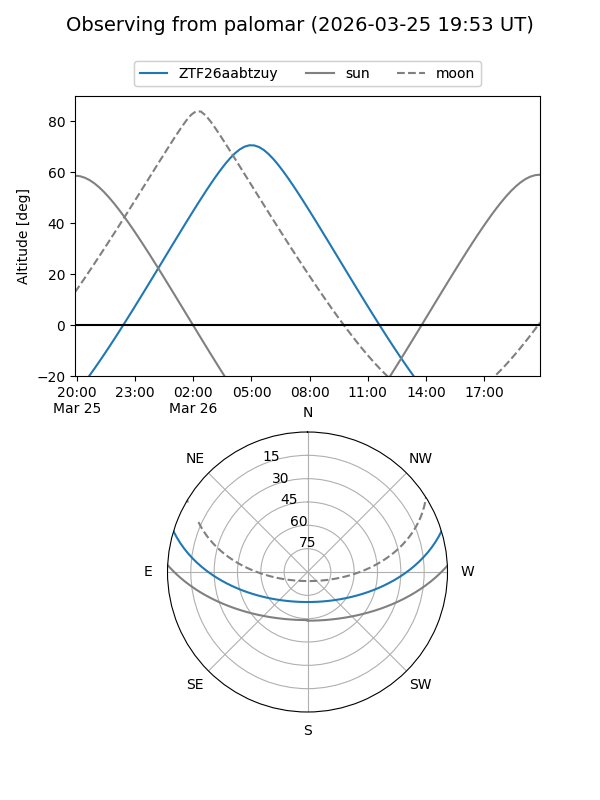

ZTF26aabtzuy
Target ZTF26aabtzuy at 2026-03-26 08:14
Aliases and brokers:
FINK: link
Lasair: link
ALeRCE: link
alt names
ZTF26aabtzuy (ztf,fink_ztf)
Coordinates:
equatorial (ra, dec) = 141.3484,+14.16121
equatorial (HMS+DMS) = 09:25:23.61,+14:09:40.37
galactic (l, b) = (217.2591,+40.43768)
Flags:
Photometry:
last ztfg=17.79, ztfr=16.85
1 ztfg, 1 ztfr detections
Lightcurve

Visibility


Additional plots